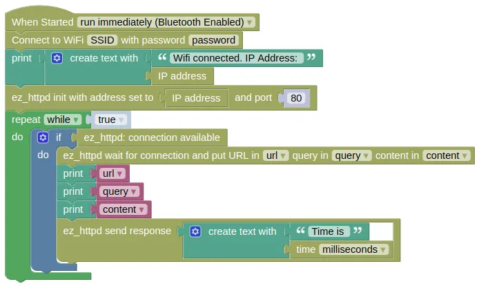

EZ HTTP (Web Server)
This extension allows you to easily create a webserver on your device. It works in either station mode (device connected to a router) or AP mode (your device acts as a router).
Code
There are multiple code examples here, demonstrating different ways of using the EZ HTTP Server.
-
Station Mode Device connects to your router and starts a webserver. Connecting to the device using a web browser will return a page containing the time. The webserver ignores the URL and returns the same page regardless of what was requested.
-
AP Mode Works the same as example 1, but the device starts as an Access Point (WiFi router). You'll need to first connect to your device via WiFi, before connecting using a web browser.
-
URL and Query This example returns different values depending on the URL and query string.
The Results section will have more details on how to test out your code.
Blocks
Station Mode

You must put in your actual WiFi SSID and password in the Connect to WiFi block, or this will not work.
AP Mode

Since your device will be acting as the WiFi router in AP mode, you can use anything for the SSID and password.
URL and Query
You must put in your actual WiFi SSID and password in the Connect to WiFi block, or this will not work.
Python
Station Mode
import ioty.wifi
import ez_httpd
import time
ioty_wifi = ioty.wifi.connect('SSID', 'password') # Put in actual WiFi SSID/Password
ip = ioty.wifi.get_ip()
print('Wifi connected. IP Address: ' + str(ip))
ezhttpd = ez_httpd.HTTPD(address=ip, port=80)
while True:
if ezhttpd.available():
url, query, content = ezhttpd.wait_for_connection()
print(url)
print(query)
print(content)
ezhttpd.send_response(('Time is ' + str(time.ticks_ms())))
AP Mode
import ioty.wifi
import ez_httpd
import time
ioty_wifi = ioty.wifi.start_ap('IoTy_Device', '12345678')
print('Wifi AP started')
ezhttpd = ez_httpd.HTTPD(address='192.168.4.1', port=80)
while True:
if ezhttpd.available():
url, query, content = ezhttpd.wait_for_connection()
print(url)
print(query)
print(content)
ezhttpd.send_response(('Time is ' + str(time.ticks_ms())))
URL and Query
import ioty.wifi
import ez_httpd
ioty_wifi = ioty.wifi.connect('SSID', 'password') # Put in actual WiFi SSID/Password
ip = ioty.wifi.get_ip()
print('Wifi connected. IP Address: ' + str(ip))
ezhttpd = ez_httpd.HTTPD(address=ip, port=80)
while True:
if ezhttpd.available():
url, query, content = ezhttpd.wait_for_connection()
try:
a = float(query['a'])
b = float(query['b'])
except:
pass
if url == '/add':
ezhttpd.send_response((str((a + b))))
elif url == '/subtract':
ezhttpd.send_response((str((a - b))))
else:
ezhttpd.send_response('Hello')
Results
-
Station Mode
-
Device will connect to your WiFi router and display its assigned IP address on the IoTy monitor. Note this down.
-
Make sure your computer is connected to the same router. Open a web browser and visit "http://IP_ADDR/" where "IP_ADDR" is replaced with the address from step 1 (eg "http://192.168.1.10/"). You should see a message displaying the device time.
-
In the IoTy monitor, you should see the URL that the web browser is retrieving (...probably "/" and "/favicon.ico"), the query string (...an empty dict "{}"), and the content sent by the web browser (...an empty string).
-
-
AP Mode
-
Device will start up in AP mode and display a "Wifi AP started" message in the IoTy monitor.
-
In your computer's wifi menu, connect to your device (...default name "IoTy_Device"). When prompted for password, use "12345678".
-
Open a web browser and visit "http://192.168.4.1/" (...this is the default IP address for your device in AP mode). You should see a message displaying the device time.
-
In the IoTy monitor, you should see the URL that the web browser is retrieving (...probably "/" and "/favicon.ico"), the query string (...an empty dict "{}"), and the content sent by the web browser (...an empty string).
-
-
URL and Query
-
Device will connect to your WiFi router and display its assigned IP address on the IoTy monitor. Note this down.
-
Make sure your computer is connected to the same router. Open a web browser and visit "http://IP_ADDR/" where "IP_ADDR" is replaced with the address from step 1 (eg "http://192.168.1.10/"). You should see the message "Hello".
-
Visit "http://IP_ADDR/add?a=2&b=3". You should see the result ("5.0") displayed.
-
Visit "http://IP_ADDR/subtract?a=4&b=7". You should see the result ("-3.0") displayed.
-
The "?" in the URL indicates that everything after it is a query string. "a=2" sets the value of "a" to 2, and "b=3" sets the value of "b" to 3. Each parameter is separated by a "&".
-
ez_httpd - easy web server
Constructors
ez_httpd.HTTPD(address='192.168.4.1', port=80)
Create an HTTPD object.
The arguments are:
-
addressA string specifying the IP address of your device. In AP mode, this will be "192.168.4.1". In Station mode, you can retrieve this usingioty_wifi.ifconfig()[0]whereioty_wifiis anetwork.WLANobject. -
portAn integer specifying the port number. The default port for web server is80.
Returns a HTTPD object.
Methods
HTTPD.available()
Checks if there are pending requests available.
If it returns True, you can perform a wait_for_connection() without blocking.
Returns a boolean.
HTTPD.wait_for_connection()
Wait for a connection and return the url, query string, and request content.
If there are no pending requests, this will block until a request arrives.
To prevent blocking, use available() to check for availability of requests first.
Returns a tuple containing 3 items url, query, content:
-
urlA string containing the URL sent by the browser. This excludes the domain name, but includes the leading/. So if you use "http://192.168.4.1/index.html" as the URL in the browser, theurlwill be/index.html. This will not be blank; "http://192.168.4.1" will return/. -
queryA dictionary of the query string. So if you use "http://192.168.4.1/?a=2&b=3" as the URL,querywill be{'a':'1', 'b':'2'}. -
contentA string containing the content sent by the browser with the request. For GET requests, this should be empty.
HTTPD.send_response(response_data, status='200 OK'):
Send a string response to a request.
You must perform a wait_for_connection() before this.
The arguments are:
-
response_dataA string containing the response to the client's request. -
statusA string containing the HTTP status code. The default200 OKis usually the correct choice.
Returns None.
HTTPD.send_bytes(response_data, status='200 OK')
Send a bytes response to a request.
You must perform a wait_for_connection() before this.
The arguments are:
-
response_dataA bytes object containing the response to the client's request. -
statusA string containing the HTTP status code. The default200 OKis usually the correct choice.
Returns None.
HTTPD.send_file(filename)
Send the content of a file as the response to a request.
The file can be uploaded to your device using the Connection Menu (3 dots) => Files on Device... => Upload.
You must perform a wait_for_connection() before this.
The arguments are:
filenameA string specifying the file to send.
Returns None.
HTTPD.start_mjpeg_response()
Start an mjpeg (Motion JPEG video) response.
You must perform a wait_for_connection() before this.
Unlike the other response methods, mjpeg are sent frame by frame continuously until the connection is closed.
Starting the mjpeg response will not send any frames, you will need to use send_mjpeg_frame() to send the video frames.
Returns None.
HTTPD.send_mjpeg_frame(frame_data)
Send an mjpeg video frame.
You must perform a start_mjpeg_response() before this.
You should also check that the mjpeg connection is still open using mjpeg_connection_open() before sending.
The arguments are:
frame_dataA bytes object containing the video frame data.
Returns None.
HTTPD.mjpeg_connection_open()
Check if the mjpeg connection is still open.
If it returns True, you can safely run send_mjpeg_frame().
If it returns False, the connection has been closed, and you should not send anymore mjpeg frame until a new request comes in.
Returns a boolean.